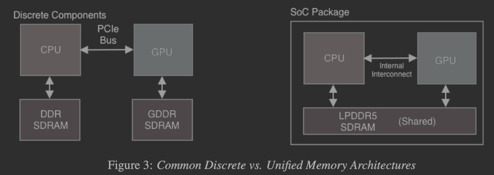
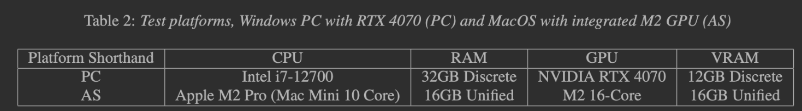
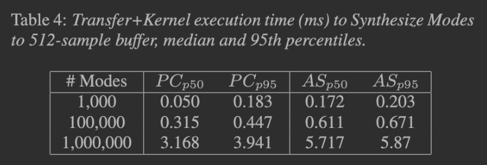
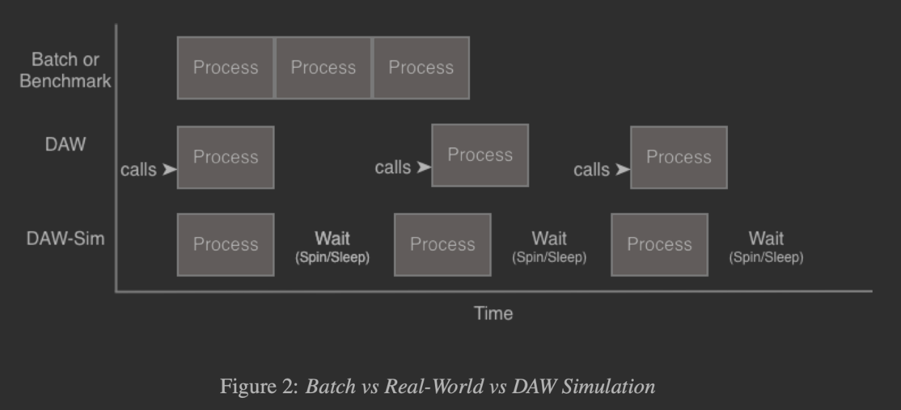
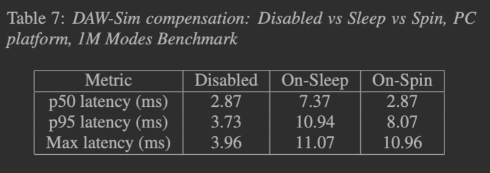
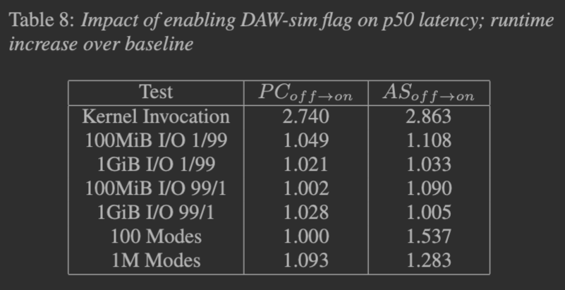

Abstract
Acceleration of audio workloads on generally-programmable GPU (GPGPU) hardware offers
potentially high speedup factors, but also presents challenges in terms of development and
deployment. We can increasingly depend on such hardware being available in users' systems, yet few
real-time audio products use this resource.
We propose a suite of benchmarks to qualify a GPU as suitable for batch or real-time
audio processing. This includes both microbenchmarks and higher-level audio domain benchmarks. We
choose metrics based on application, paying particularly close attention to latency tail
distribution. We propose an extension to the benchmark framework to more accurately simulate the
real-world request pattern and performance requirements when running in a digital audio workstation.
We run these benchmarks on two common consumer-level platforms: a PC desktop with a recent mid-range
discrete GPU and a Macintosh desktop with unified CPU-GPU memory architecture.
Goal: Create an extensible framework to answer questions such as:
Can this system process audio on the GPU at real-time rates?
What is the overhead? What are the bounds on buffer size and sample rate?
How many tracks can be processed in real-time? What are the data transfer limits?
Does this platform excel at or struggle with certain subtasks?
Perhaps one platform has arithmetic throughput but slow memory access once working set exceeds some limit.
Test Systems
Benchmarks were written on NVIDA/CUDA and Apple/Metal platforms. The MacOS consumer and professional platorms both utilize a shared memory architecture we are interested in exploring for random memory accesses.


Metrics
We measure two core metrics: latency and throughput. Latency is the wall-clock time in milliseconds between when an audio buffer is requested to be processed and when its results are available. This is our most important metric: if we miss the deadline for processing a single buffer, a recording take or a song may be ruined. We will report median, 95th percentile, and maximum audio buffer processing times, and care about tail latencies a great deal. In cases of excessive latency metrics, developers may add buffering and leverage the DAW's latency compensation. Batch processing tasks are less sensitive to latency, of course. We may say an audio processing task "meets the latency bar" if it is able to complete within the time allowed for its audio callback. This is defined as the audio buffer size divided by the sampling rate, minus some time for overhead.
Throughput measures how much data a system be processed over time, for example one may compute 500 Megabytes of data per second for some task A and 1,200 Megabytes per second for some task B. This is useful in considering how many tracks of 32-bit audio at a target sampling rate we can process, and when properly measured yields the overall speedup factor over a CPU process.
Implementation and Results
I/O Benchmarks, Varying Data Mixes
Anecdotally, I/O transfer time is a very common concern when discussing performing tasks at audio rates.
We measure the time to read and write data to and from the GPU. We vary the mix of reads and writes to see how the platform handles different mixes of I/O operations.
// Kernel code is a no-op or performs a single trivial operation (Metal).
// We are measuring overhead involved in invoking a GPU function repeatedly.
RndMem "graintable" memory access
// Simulated quasi-granular synthesis kernel.
// N virtual playheads read from areas of memory.
// This is intended to exerise some of the "unfortunate" cases:
// - random memory access
// - unalgned memory access between threads within a warp
// - non-coalesced memory access between threads in a warp
// For simplicity we do not wrap around the end of the buffer inside
// the kernels here. We may wish to change this as it would disrupt
// caching behavior a bit further; there
// would be a point where a new cache line would be loaded.
__global__ void RndMemKernel(const float* sampleMem,
const int* playheads, float* outBuf) {
int trackidx = blockDim.x * blockIdx.x + threadIdx.x;
int playhead = playheads[trackidx];
for (int i = 0; i < BUFSIZE; i++) {
// This benchmark is stressing random reads and writes from
// global memory. Note the calling (host/CPU) code should
// place these in varying locations across sample memory,
// and likely unaligned, different loop lengths, etc.
// Write is aligned and free of bank conflicts.
outBuf[NTRACKS*i + trackidx] = sampleMem[playhead] + i;
}
}
This benchmark exhibits a number of undesirable memory access patterns.
The MacOS/Metal platform excels here, in terms of performance per watt.
Configuration
Usage: ./GPUAudioBench --buffersize 512 --benchmark datacopy2080
--fs 48000 --ntracks 128
Supported benchmarks: [...omitted...]
Optional flags:
--dawsim: Simulate DAW-like behavior
--dawsim_delay: Simulated buffer interarrival time in milliseconds
--skip-human-readable-summary: Disable human-readable summary
--nruns: Number of runs
--help: Print this help message
--outputfile: Output file for stats
Output
Sample output from a run of a Conv1D benchmark which did not pass follows. A warning will be given if (median || p95 || maximum) latency caused an underrun.
Buffer Size: 512
Benchmark: Conv1D
FS: 48000
Number of Tracks: 256
Outer Runtime: 1118.35 ms
Max latency of 100 runs: 29.833042 ms
Success writing output stats to /tmp/gpubench_Conv1D_512_256.txt
p50: 10.897
p95: 11.551
max: 29.83304
WARNING: median latency 10.897 ms over 10.667 ms callback time limit.
Whereas a successful run will report:
TODO
Usage: ./GPUAudioBench --buffersize 512 --benchmark datacopy2080
--fs 48000 --ntracks 128
Supported benchmarks: [...omitted...]
Optional flags:
--dawsim: Simulate DAW-like behavior
--dawsim_delay: Simulated buffer interarrival time in milliseconds
--skip-human-readable-summary: Disable human-readable summary
--nruns: Number of runs
--help: Print this help message
--outputfile: Output file for stats
Buffer Size: 512
Benchmark: Conv1D
FS: 48000
Number of Tracks: 256
Outer Runtime: 1118.35 ms
Max latency of 100 runs: 29.833042 ms
Success writing output stats to /tmp/gpubench_Conv1D_512_256.txt
p50: 10.897
p95: 11.551
max: 29.83304
WARNING: median latency 10.897 ms over 10.667 ms callback time limit.
TODO
Kernel Launch Times
// Kernel code is a no-op or performs a single trivial operation (Metal).
// We are measuring kernel execution time.
Modal Synthesis via Phasor Filters
We synthesize N modes of a modal resonator, each with a different frequency and decay time. The modes are excited by a single impulse at the beginning of the simulation and are modulated to require recomputation of some coefficients each loop.
Phasor filters are used, which are complex multiply-based. We use a custom cexpf function and custom complex multiplication on Metal, but may utilize cuComplex on CUDA platforms.
// Placeholder for cexpf code
Optimization: Pre-mixing
For high N, this is a very large amount of data and can saturate the PCIe bus for discrete GPU platforms. In v2 of the CUDA version of this benchmark, alongside earlier work, we tree-sum down inside each warp for a 32x reduction in output size (pre-mixed sets of modes). Please note the public repo needs to be updated with this modification.
// Pairwise sum reduction: 32 -> 16 -> ... -> 1
for (int offset = 16; offset > 0; offset /= 2)
merge_output += __shfl_down_sync(0xffffffff, merge_output, offset);
if (is_first_thread_in_warp) {
output[which_warp*BUFFERSIZE + samp] = merge_output;
Performance
 This benchmark exercises the FPUs (32-bit). We note the CUDA card scales further, as might be expected with significantly higher TDP.DAW Simulation Mode
The DAW-Sim mode is designed to improve on the batch-like microbenchmarks, simulating the request pattern seen by real-time audio processors.

We may choose whether to sleep or actively spin; both have analogs in the DAW world. Impact of this choice varies under different conditions:

We may see overall impact of DAW-Sim implementation across data transfer and synthesis tasks:

- The code is not "DAW-Ready" and may abstract threading issues on each platform (potentially significant)
- Thus, these tests are necessary but not sufficient for real-world usage.
- Code has been, and is being, transformed to be more readable. You may wish to check out the
v1.0
tag.
Observations
- CUDA (discrete) and Metal (shared-memory) platforms excel in different tasks.
- Arithmetic throughput is attractive but latency variation is concerning for real-world applications.
- DAW simulation extension has a measurable effect and suggests impact of OS scheduler.
- Future investigation: run these in an environment with measured contention (other GPGPU tasks running)
- Future work: call this code across processes, or run it in-proc, from real VST/AU plugins.